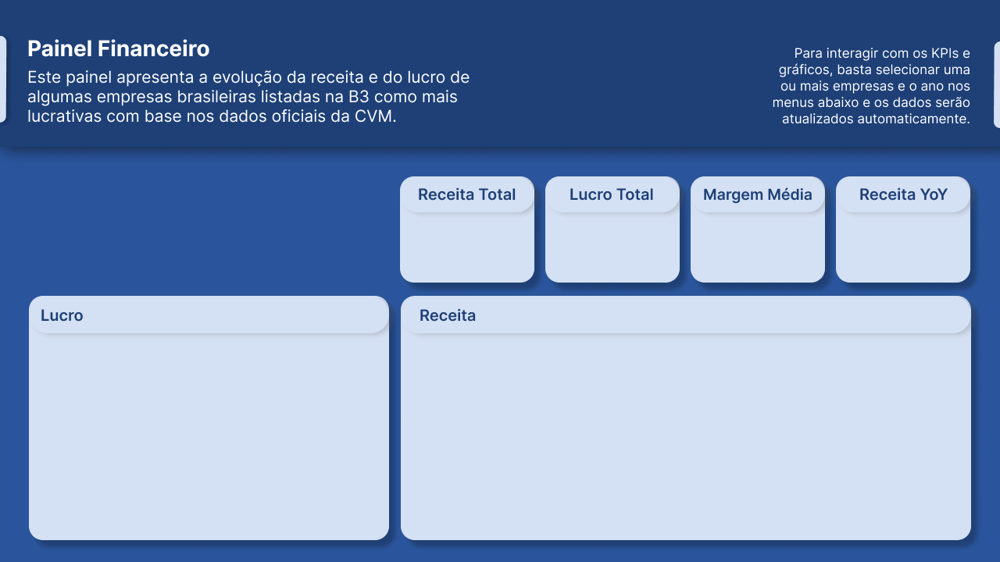
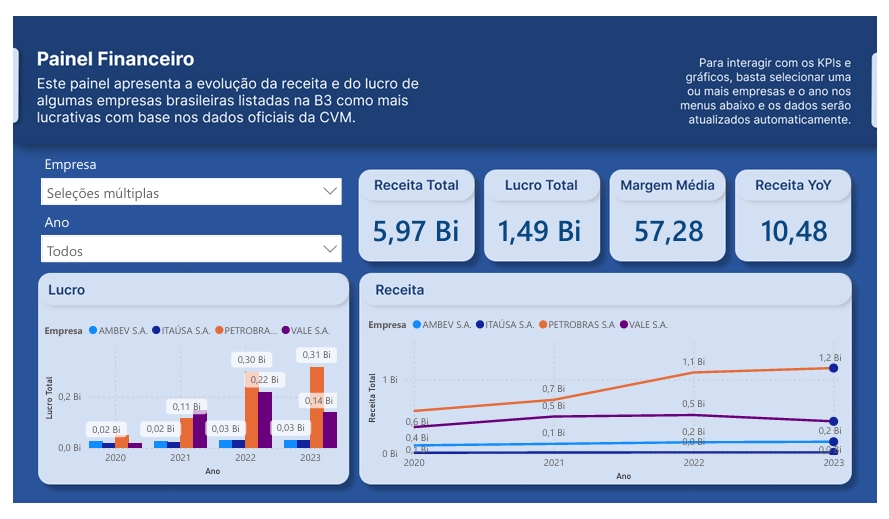
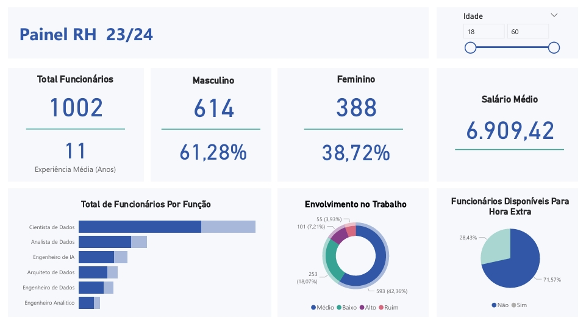

Nesta página, apresento dois projetos desenvolvidos com Power BI, utilizando dados reais para construção de dashboards interativos com foco em visualização e análise estratégica. Os projetos envolvem também etapas de tratamento de dados com Python, SQL e design no Figma.
O primeiro projeto é um dashboard financeiro com foco em receitas, despesas e saldo ao longo do tempo. Os dados foram organizados em Python e importados para o Power BI, que permite segmentações por período e análise de variações.
O layout visual foi previamente planejado e modelado no Figma para garantir clareza e estética:

A seguir, o resultado final no Power BI com os gráficos funcionais e filtros interativos:

O segundo projeto aborda dados de recursos humanos, com foco em distribuição por cargos, tempo de casa, áreas da empresa e envolvimento dos funcionários. A apresentação foi pensada para fornecer rapidamente uma visão geral da força de trabalho.

Repositório: github.com/htarod/projeto-powerbi
← Voltar ao início